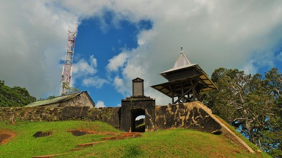

Caiena

Caiena é a capital da Guiana Francesa, na costa nordeste da América do Sul. O centro histórico do século XVII combina influências de França, das Caraíbas e do Brasil. As casas crioulas de cores tropicais ficam junto às ruínas do forte colonial francês, Fort Cépérou, no topo da colina, com vista para o rio Caiena. As lojas e os cafés encontram-se na principal rua comercial, a Avenue du Général de Gaulle.

O Forte Cépérou era um forte que protegia a cidade de Caiena, na Guiana Francesa. Tem o nome de Cépérou, um célebre chefe indígena que cedeu a terra. O forte de madeira original foi construído em uma colina com vista para a foz do rio Caiena em 1643.
Curiosidades
Situada na América do Sul, a 7000 km de distância da costa francesa, a antiga colônia que remonta ao século XVII foi anexada como departamento ultramarino da França em 1946. Isto significa que a Guiana Francesa é, na realidade, uma extensão do território francês, integrando também à União Europeia, utilizando o Euro como moeda oficial e sendo regida pelas mesmas leis da França.

Concluída em 2012, a ponte que liga o território brasileiro à Guiana Francesa foi anunciada pelos presidentes dos dois países da época em 1997, sob a premissa de facilitar o intercâmbio entre os países. Acontece, porém, que a construção com 378 metros de comprimento nunca foi inaugurada e, portanto, o seu uso está proibido até os dias de hoje. Turistas e moradores das regiões vizinhas, Oiapoque, no Brasil, e St. Georges, na Guiana Francesa, normalmente realizam a travessia do rio que divide as duas regiões de lancha ou barco.
O principal centro espacial europeu fica na Guiana Francesa

O Centro Espacial de Kourou, na Guiana Francesa, é a porta pela qual a Europa se conecta com o espaço. Com uma localização estratégica, situado a apenas 500 km ao norte do Equador, o centro espacial hospeda a base de lançamento de foguetes e satélites de três grandes agências: ESA (Agência Espacial Europeia), a Ariane Space, sociedade da qual participam dez países europeus, e o CNSE (Centre national d’études spatiales), a agência espacial francesa.